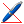
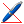

Al pulsar sobre cualquiera de estos iconos aparecerá en el panel de las herramientas de edición dos cajas de texto, una hace referencia a la coordenada X y otra a la coordenada Y del mapa.
Esta herramienta permitirá trabajar con coordenadas absolutas además de con coordenadas relativas. Forma parte de las herramientas de dibujo existentes en GEOPISTA. Los iconos de las distintas herramientas de edición que emplean esta utilidad son:  , ,
, ,  y
y  .
.
Al pulsar sobre cualquiera de estos iconos aparecerá en el panel de las herramientas de edición dos cajas de texto, una hace referencia a la coordenada X y otra a la coordenada Y del mapa.

Por defecto estas cajas hacen referencia a las coordenadas absolutas del mapa, pero si se marca la casilla “Coord. Relativas” de este panel, harán referencia a las coordenadas relativas a un punto.
Con el modo de funcionamiento en coordenadas absolutas, si se desplaza el cursor en la zona del mapa, se indicará en los cuadros de texto las coordinas X e Y sobre las que se encuentra el cursor en el mapa. Sin embargo si habilita la opción de coordenadas relativas, se mostrarán las coordenadas relativas al último punto dibujado en el mapa por la herramienta que contiene esta utilidad.

Permite además introducir los puntos a dibujar a través de estos cuadros de texto, de manera que se puede introducir cada uno de los puntos escribiendo las coordenadas deseadas en estos recuadros y pulsando el botón de Intro del teclado. Para introducir el último punto que determina el final del proceso de dibujo de la nueva entidad hay que pulsar el botón de Intro pero manteniendo pulsado en botón Ctrl del teclado. Este modo de inserción de los puntos se le indica al usuario a través de la barra de estado.

Además se pueden alternar los puntos fijados en el mapa a través del ratón y a través de los cuadros de texto del panel de herramientas de edición, dotando a las herrmientas de dibujo de una mayor flexibilidad.